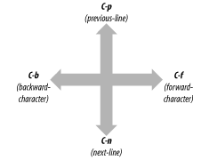
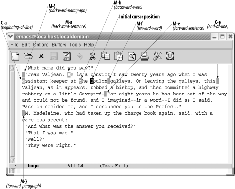
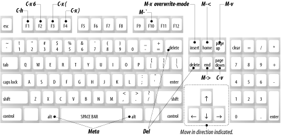

2.1.移动光标
移动光标最方便的方法就是点击鼠标左键或者按箭头儿键。然而，每次都去 够鼠标比较麻烦。学会用按键移动光标，你会在Emacs里获得盲打的速度以及最高 的效率。
用Emacs指令让光标向前移动一个位置，输入 C-f ( f 表示 forward )。你可能猜到了， C-b 向后移动一个位置。向上移动，输入 C-p (表示 previous-line )，向下移动，输入 C-n (表示 next-line )。如果你理解字 母的含义，你就很容易记住这些指令。
图2-2 说明如何使用Emcas指令上下左右移动光标。

*图2-2.基本光标移动*
如果在行尾，按 C-f 会移动到下一行的首个字符。同样，如果在行首， C-b 会移动到前一行的最后一个字符。如果没有地方可以移动，Emacs会鸣叫一 声并显示信息 Beginning of buffer 或者 End of buffer 。
2.1.1其他移动光标的方法
现在介绍一些更高级的移动光标的方法。一个常见的方法是按单词向前向后 移动: M-f 向前移动一个单词; M-b 向后移动一个单词。也可以移动到行首 行尾。 C-a 移动到行首(正如a是字母表的首字母)。 C-e 移动到行尾。向回 移动一句话，按 M-a ，向前移动一句话按 M-e 。向前一移动一段，按 M-} ;向回移动一段按 M-{ 。如果光标在句子或段落中间，那么向回移动一句或一 段，实际上是移动到当前句子或段落的开头。
图2-3 用Victor Hugo的Les MisMisérables中的几段来演示如何每次移动光 标位置不止一个字符。

*2-3.移动光标位置不止一个字符*
或许你已经领会到一个规律。注意到以 Ctrl 开头和以 Meta 开头的指 令间的区别。 Ctrl 指令与对应的 Meta 指令相比一般移动更小的单元。例 如： C-b 光标向前移动一个字符，而 M-b 光标向前移动一个单词。同样， C-a 移动到行首，而 M-a 移动到句首。
按行或段移动时有一个忠告。Emacs对句子的定义相当严格。除非光标在行的末 尾，否则必须在最后的标点符号后有 两个 空格。Emacs不识别末尾仅有一个空 格的句子。同样，向前向后移动一段包括理解Emacs对段落的定义。对Emacs而言 （同样对我们大部分人而言），段落要么用个Tab要么以一个空格开始，或者两行 之间有空白行（块风格）。你可以改变这些定义，但是首先你要理解如何使用正 则表达式，在第三章有简单介绍，第11章有更深入的讲解。第10章讨论如何修改 变量。
如果文件中有分页符，可以按 C-x ] ( forward-page ) 移动到下一页，按 C-x [ ( backward-page )移动到前一页。与段落和句子的移动类似，按页移 动包含着Emacs对页的定义。名为 page-delimiter 的变量定义了哪些东东构成 分页符。如果没有Emacs可以识别的分页符，Emacs就认为整个缓冲区就是一个非 常长的页面。这种情况下，下翻页( forward-page )指令会移动到缓冲区的尾 部，上翻页( backward-page )指令会移动到头部。
文本模式下，分页符是一个进纸标识，告诉打印机移动到下一页（通过打印机移 动到下一页面， 进纸符 由此而来），然后继续打印。如果在文本模式下向文 件中插入分页符，输入 C-q C-l (小写字母L)。 C-q 是引用插入指令( quoted-insert )，它告诉Emacs插入一个 C-l 控制符到文件中，而不是解释 C-l 是一个重定位指令。一个 C-l 字符看起来像两个字符(L)，但实际上只 是一个字符。（试着用 Del 键删除一个，就知道是不是一个字符了。）
2.1.2 一次滚动一屏（或更多）
像其他图形应用程序一样，你可以使用滚动条在Emacs中移动。像Emcas中大 部分东西一样，除了用鼠标和滚动条之外，还应该学习Emacs自己的快捷键来最大 化你的工作效率。
如果你想一次移动一屏，使用 PgDown 键或者输入 C-v 。Emacs会显示下一 整页。它会在上部保留前一页的几行文字，让你想起前文内容。同样，按*M-v* （或 PgUp 键）显示上一页。 M-v 和 C-v 提供了一个快速滚动的方式。
当你输入任何移动指令，移动到当前显示内容之外的位置时，Emacs都会自动滚屏。 例如：当前光标在显示内容的最后一行，然后按 C-n ，Emacs向下滚动。同 样，如果在显示内容的最上一行，按 C-p 会滚动到上一页。
你经常会想从任意位置移动到开头或结尾。输入 M-> 或者 End 移动到 缓冲区尾。输入 M-< 或 Home 移动到缓冲区头。 > 指向结束位置， < 指向开始位置，这或许有助于你记住这两个指令。
还有两个移动的方式也能派上用场。 M-x goto-line Enter n Enter 移动光标 到第 n 行。当然，Emacs是从文件开头计算行数的。同样 M-x goto-char Enter n Enter 移动到从文件开头计算的第 n 个字符。这两种情况下， n 表示一个数字。
对于程序员来说，这些指令是很有用的，因为很多编译器给出错误消息：Syntax error on line 356。(第356行语法错误)。使用这些指令你可以很容易的到达错 误的位置。还有一些更复杂的方式可以将Emacs与编译器或其他程序的错误信息关 联上。此外，还有其他光标移动指令只适用于编程（见第9章详细介绍）。
2.1.3 重复执行指令
现在学习一些高效的技巧。Emacs可以无限次的重复执行任何指令。首先，在输入 指令前先输入 M-n ， n 表示你想重复的次数，你就可以重复执行指令 n 次。这个指令被称为数字参数（ digit-argument ）指令。
如果想执行很多次，可以给 M-n 一个很大的参数。例如，假如你正在编辑一个 大文档，有1000行。如果你输入 M-500 C-n ，光标会向下移动500行，到达文 件的中间。如果给 M-n 提供一个比最大可执行次数还大的参数，那么Emacs会 最大限度的重复执行指令然后停止。
还有另一个复合指令可以使用: C-u (全局变量指令)。你可以给 C-u 一个参 数和 M-n 的一样。即可以输入 M-5 也可以输入 C-u 5 来重复执行后面的 指令5次。但是不像 M-n 那样， C-u 可以不跟参数来重复执行指令。没有参 数时， C-u 执行后面的指令4次。如果输入 C-u C-u ，会执行16次指令。这 样你可以重复输入 C-u 来让指令执行多次：16，64，256等等。1
2.1.4 居中显示
C-l ，居中显示指令( recenter )，将当前行按垂直方向显示在正中间。当 你在显示区的上缘或下缘编辑时，这个功能就很有用。输入 C-l 后迅速将你关 心资料移动到显示区中间，这样就比较容易看清上下文了。
由于某种原因，显示内容被遮盖或者包括乱码， C-l 也会重绘显示区。但是在 用终端时就不会有这种功能，但是这是个比较方便的快捷键还是应该知道的，尤 其是当你在终端上使用远程主机的Emacs时。(感觉像刷新功能)。
表2-2 列出光标移动指令。如果指令是便于记忆的，助记单词会以斜体形式给出。
| 快捷键 | 指令名 | 行为 |
|---|---|---|
| C-f | forward-char | 向前移动一个字符（右） |
| C-b | backward-char | 向后移动一个字符（左） |
| C-p | previous-line | 移动到上一行（向上） |
| C-n | next-line | 移动到下一行（向下） |
| M-f | forward-word | 向前移动一个单词 |
| M-b | backward-word | 向后移动一个单词 |
| C-a | beginning-of-line | 移动到行首 |
| C-e | end-of-line | 移动到行尾 |
| M-e | forward-sentence | 向前移动一句 |
| M-a | backward-sentence | 向后移动一句 |
| M-} | forward-paragraph | 向前移动一段 |
| M-{ | backward-paragraph | 向后移动一段 |
| C-v | scroll-up | 向上滚动一屏 |
| M-v | scroll-down | 向下流动一屏 |
| C-x ] | forward-page | 向前移动一页 |
| C-x [ | backward-page | 向后移动一页 |
| M-< | beginning-of-buffer | 移动到缓冲区头 |
| M-> | end-of-buffer | 移动到缓冲区尾 |
| (none) | goto-line | 移动到指定行 |
| (none) | goto-char | 移动到指定字符 |
| C-l | recenter | 当前行居中显示 |
| M-n | digit-argument | 执行 n 次后面的命令 |
| C-u n | universal-argument | 执行 n 次后面的命令（忽略n时执行 4 次) |
2.1.5 Emacs指令和你的键盘
可以通过标准键盘上处理很多Emacs的指令，比如 PageDown (下翻页)或 Home (跳到缓冲区开始位置)。图2-4显示一个键盘的布局以及键的功能。你的 键位置或许有些微区别，如果有的键具有相同的或相似的名字，就应该可以工作。 之所以说"应该"是因为有些情况下键不能工作，比如:你在一台远程主机上运行 Emacs。我们建议你学习标准Emacs指令;他们可以在任何键盘上工作，并且你一旦 学会，它们也比较容易够到。

Figure 2-4. Emacs commands and your keyboard
Footnotes:
1 更多时候你会使用C-u。然而，它不总是以叠加的方式工作。有时C-u会改 变指令的功能。在本章的后部你会看到一个这样的情况。然而，如果做一些叠 加器可以发挥作用时，C-u就会按这种方式工作。
Date: 2010-11-02 10:32:03
HTML generated by org-mode 6.33x in emacs 23